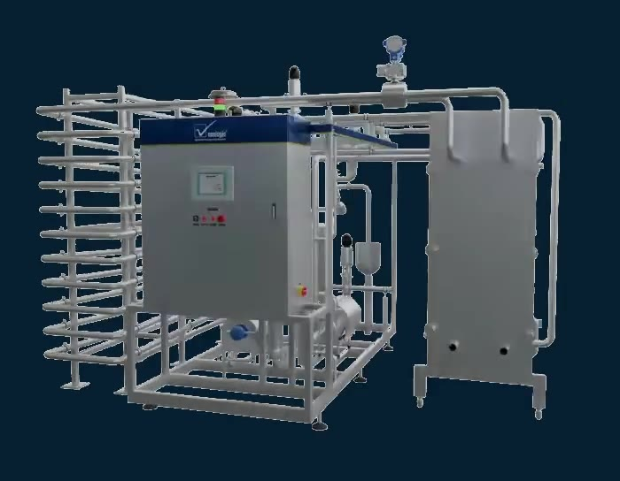
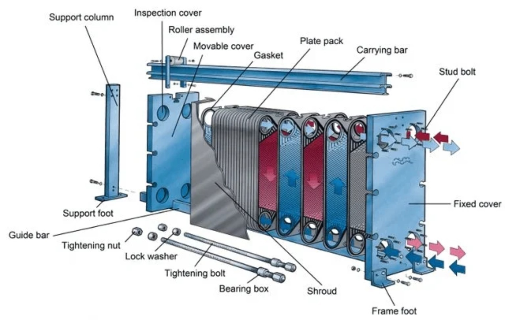
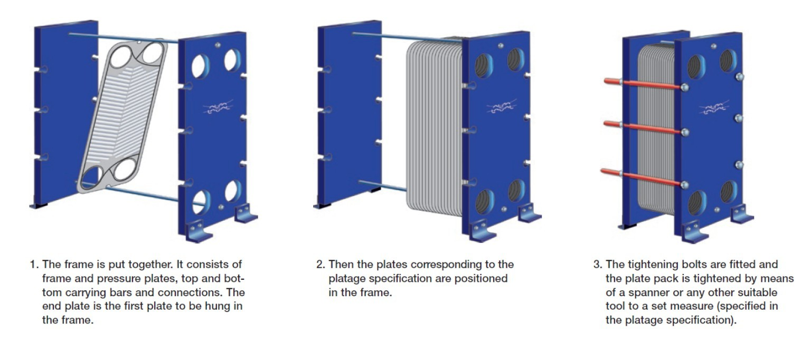
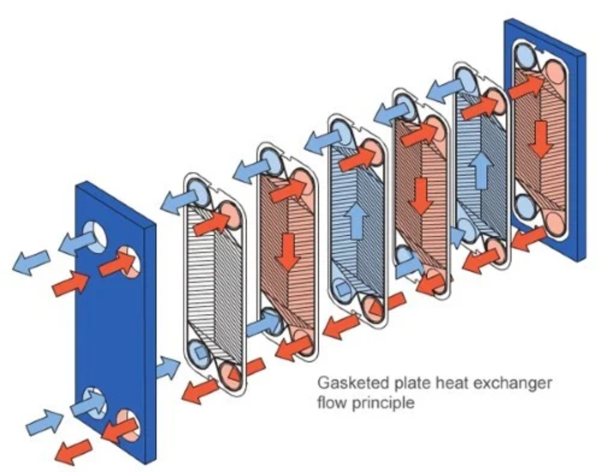
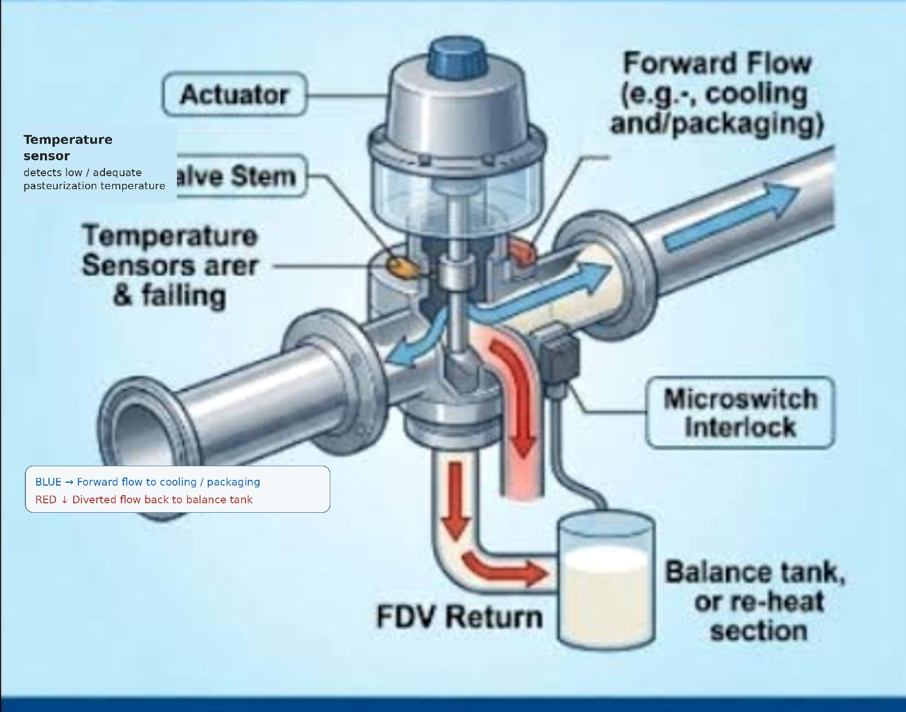

Milk Pasteurizer
A detailed engineering guide to continuous HTST milk pasteurization — from raw-milk feeding and regeneration to final heating, holding, flow diversion, regenerative cooling and chilled product outlet.
Continuous Pasteurizer
The pasteurizer animation shows the equipment in operation and can be started or stopped with the switch.

Dairy Sphere • pasteurizer live viewQuick Process Reference
01 • Complete Pasteurizer Schematic
Use this as the main plant reference. It shows the actual arrangement of raw-milk feed, balance tank, centrifugal pump, duplex filter, cream separator, homogenizer, heating/PHE sections, holding tube, FDV, hot-water circulation and final cooling.

02 • What Is a Milk Pasteurizer?
Pasteurization is a controlled heat treatment in which milk is heated to a specified temperature and held for a specified time, followed by rapid cooling. The objective is to destroy pathogenic microorganisms to a safe level while avoiding unnecessary deterioration of the milk's physical, chemical, sensory and nutritional qualities.
An HTST pasteurizer is a continuous, closed process system. Instead of heating a batch in a vat, milk continuously passes through heat-transfer sections and a precisely dimensioned holding tube. The process is therefore closely linked to flow control, temperature measurement, pressure relationships, heat recovery and automatic diversion.
03 • Pasteurization Methods
LTLT / Batch
Milk is heated in a jacketed multipurpose vat, held around 63°C for 30 minutes in the classical reference, and then cooled. It is suitable for smaller capacities.
HTST / Continuous
Milk is continuously heated in a plate heat exchanger, held for a short defined period and rapidly cooled. It is the common large-scale milk pasteurization arrangement.
Flash / Other Designs
Industrial heat-treatment systems can use different exchanger configurations. The equipment and temperature-time schedule depend on product, capacity and process objective.
04 • Working Principle — Step by Step
- Balance tank: raw milk enters the balance tank, where level control helps maintain a continuous feed.
- Feed pump: the sanitary pump establishes the required product flow through the pasteurizer.
- Preheating / regeneration: cold raw milk receives heat from hot pasteurized milk leaving the holding section.
- Process equipment: clarification/separation and homogenization may be included according to the plant design and product route.
- Final heating: hot water supplies the remaining heat needed to reach the pasteurization temperature.
- Holding: milk travels through the holding tube for the validated residence time.
- FDV: temperature is evaluated after the holding stage. Adequately heated milk goes forward; insufficiently heated milk is diverted.
- Regenerative cooling: forward-flow pasteurized milk transfers heat back to incoming raw milk.
- Final cooling: chilled water or another suitable coolant removes the remaining heat before storage/packing.
05 • Construction & Main Components
Balance / Float Tank
Provides buffer volume and stable feed conditions. Low-level protection can trigger diversion and shutdown sequences.
Feed Pump
Provides continuous sanitary product flow and works with flow measurement/control.
Duplex Filter
Removes foreign particles before downstream processing and allows cleaning/maintenance without necessarily stopping the complete route.
PHE
Contains regenerative, heating and cooling sections as required by the process design.
Holding Tube
A sanitary tube of calculated length/volume that provides the required residence time at pasteurization temperature.
FDV
Automatically selects forward or diverted flow based on the pasteurization control condition.
Hot-Water Unit
Closed hot-water circuit transfers heat to milk indirectly through the PHE heating section.
Cooling Section
Removes the remaining heat after regenerative cooling to reach the desired chilled outlet.
Instrumentation
Temperature, flow and pressure measurement provide process control, safety interlocks and recording.
06 • Plate Heat Exchanger (PHE)
The PHE is the central heat-transfer device in the conventional HTST milk pasteurizer. It is constructed from a pack of thin stainless-steel plates clamped in a frame. The corrugated plates create narrow channels, increase turbulence and improve heat transfer while keeping the product and service fluids physically separated.



Regeneration section
Hot pasteurized milk heats cold incoming raw milk. The pasteurized stream is simultaneously cooled, recovering a large part of the available sensible heat.
Heating section
Hot water provides the remaining heat required to bring milk to the validated pasteurization temperature.
Cooling section
After regeneration, chilled water or another suitable coolant removes the remaining heat before the pasteurized milk leaves the system.
07 • How Milk Flows Inside the PHE
Milk does not flow through the same channel as the heating or cooling medium. Gaskets and plate arrangement route the streams through alternate channels. Heat crosses the stainless-steel plate wall while the fluids remain physically separated.
08 • Regeneration / Heat Recovery
Regeneration means using the heat of hot pasteurized milk to preheat cold incoming raw milk. The incoming milk therefore reduces the external heating load while the outgoing pasteurized milk is simultaneously pre-cooled.
Example: Incoming raw milk = 4°C; milk after regeneration = 68°C; pasteurization temperature = 72°C.
Thus, approximately 94.1% of the theoretically available temperature rise is achieved by regeneration in this example.
09 • Heating Section & Hot-Water Circuit
After regeneration, milk still needs to reach the pasteurization temperature. Final heating is normally indirect: hot water flows through adjacent PHE channels and transfers heat through the plate wall to the milk.
Temperature control
- A product temperature sensor/transmitter monitors the milk temperature.
- The controller adjusts the heating-medium control valve.
- A temperature drop causes increased heating duty; a rise reduces the duty.
- The aim is a stable, validated pasteurization temperature before the holding tube.
Why hot water?
Hot water provides a controlled indirect heating medium and helps avoid direct contact between steam and milk. A closed circulation loop can include a pump, heater/steam heat exchanger, control valve, expansion vessel and safety devices.
10 • Holding Tube — Residence Time & Design
The holding tube is the section after final heating in which milk remains at or above the validated pasteurization temperature for the required treatment time. Its design links flow rate, tube diameter, tube length, cross-sectional area, velocity and residence time.
Basic relationships
V = A × L
Q = volumetric flow rate
Average / nominal residence time, tavg = V/Q
Where A = tube cross-sectional area (m²), D = internal diameter (m), L = effective holding-tube length (m), V = internal holding volume (m³), and Q = product flow rate (m³/s).
Why an efficiency factor is used
Milk in a pipe does not have a perfectly uniform velocity profile. The centre region can move faster than the wall region. Therefore, the average residence time calculated from V/Q should not automatically be treated as the minimum residence time of every fluid element.
For an illustrative design calculation, if an efficiency factor η = 0.85 is specified, the tube is sized so that the effective residence time meets the required holding time.
Step-by-step Example 1 — Designing the holding tube
Given: pasteurizer capacity = 10,000 L/h; required holding time = 15 s; holding-tube internal diameter = 48.5 mm; design efficiency factor η = 0.85.
Q = 10,000 L/h = 10 m³/h = 10/3600 = 0.0027778 m³/s
D = 48.5 mm = 0.0485 m
A = πD²/4
= π(0.0485)²/4
= 0.0018475 m²
v = Q/A
= 0.0027778/0.0018475
= 1.504 m/s
tavg, required = trequired/η
= 15/0.85
= 17.65 s
V = Q × tavg, required
= 0.0027778 × 17.65
= 0.04902 m³ = 49.02 L
L = V/A
= 0.04902/0.0018475
= 26.53 m ≈ 26.5 m
tavg = V/Q = 0.04902/0.0027778 = 17.65 s
teffective = η × tavg = 0.85 × 17.65 = 15.0 s ✓
Step-by-step Example 2 — 5 KL/h dairy plant
This example is useful for understanding a plant operating around 5,000 L/h. Assume a 51 mm internal-diameter tube, 15 s required holding time and η = 0.85.
D = 51 mm = 0.051 m
A = π(0.051)²/4 = 0.002043 m²
Average Residence Time — Worked Example
Average residence time is the time obtained by dividing the fluid volume inside the holding section by the volumetric flow rate. It is often called the nominal residence time when calculated simply from vessel/tube volume and flow.
Flow rate = 10,000 L/h = 166.67 L/min = 2.7778 L/s
tavg = 49.02 / 2.7778 = 17.65 s
If the design efficiency factor is 0.85, the corresponding design effective time is:
Quick design sequence
11 • Flow Diversion Valve (FDV)
The FDV is the pasteurizer's automatic safety gate. It is associated with the temperature control point downstream of the holding section.

Forward flow
When the required pasteurization condition is satisfied, the valve permits milk to proceed toward regeneration, final cooling and the downstream product route.
Diverted flow
If the product temperature falls below the required condition, the valve moves to divert the milk back toward the balance tank/reprocessing route.
12 • Booster Pump & Differential Pressure
The pasteurized side of the regenerative heat exchanger is maintained at a higher pressure than the unpasteurized side. This pressure relationship is a hygienic safety barrier.
If a plate develops an internal leak, the desired pressure direction is from the pasteurized side toward the raw-milk side rather than from raw milk into pasteurized milk. A booster pump and pressure instrumentation can establish and supervise this relationship.
13 • Cooling Section
Cooling is not the same as regeneration. In regeneration, pasteurized milk transfers heat to incoming raw milk. After that heat recovery step, the pasteurized milk still needs final cooling.
- Regenerative cooling: product-to-product heat recovery.
- Final cooling: chilled water/ice water or another suitable coolant removes the remaining heat.
- The final product temperature is important for storage stability and downstream packaging.
14 • Control & Instrumentation
Temperature transmitter
Measures product temperature at the pasteurization control point and provides the control signal.
Flow transmitter / flow control
Maintains the designed flow so the holding time remains within the validated condition.
Pressure indicators
Help verify the required pressure relationship across product and service sides.
FDV position feedback
Confirms forward/divert status and supports safety interlocks.
Recording
Pasteurization temperature and relevant safety status can be recorded for verification.
PLC / control panel
Coordinates pumps, valves, temperature control, diversion, alarms and operating sequences.
15 • CIP, Fouling & Cleanability
Milk deposits can accumulate on heated surfaces and reduce heat-transfer performance. Fouling can increase pressure drop, disturb heat-transfer duty and complicate hygienic operation.
CIP objectives
- Remove milk residues.
- Remove fat and protein deposits.
- Control microbial contamination.
- Clean PHE product channels.
- Clean holding tube and product lines.
- Clean valves and associated product-contact equipment.
- Restore the system to a hygienic condition before production.
- Protect heat-transfer performance.
16 • Pasteurization Quality Verification
Temperature record
Confirm the validated temperature condition was reached and maintained.
Holding condition
Verify flow and holding-tube design remain consistent with the validated holding time.
Phosphatase / enzyme check
Alkaline phosphatase is used as a pasteurization adequacy indicator for fluid milk; the applicable test procedure depends on product and quality system.
17 • Holding-Tube Design Summary
The complete solved holding-tube calculation is given in Section 10. The key design chain is:
Example 1
10,000 L/h, 48.5 mm ID, η = 0.85, 15 s required → 26.5 m tube.
Example 2
5,000 L/h, 51 mm ID, η = 0.85, 15 s required → 12.0 m tube.
Average residence time
For Example 1: 49.02 L ÷ 2.7778 L/s = 17.65 s nominal average time.
18 • Plant Reference — Practical Dairy Engineering
In a real dairy, the pasteurizer is not an isolated machine. It is integrated with milk reception, filtration, separation/clarification, homogenization, hot-water generation, refrigeration, storage tanks, valves, instrumentation and CIP.
Product side
Balance tank → pump → treatment sections → holding tube → FDV → cooling → pasteurized storage/outlet.
Heating side
Hot-water circulation → PHE heating section → return to heating unit for controlled temperature maintenance.
Cooling side
Cooling water/ice-water circuit → PHE cooling section → return/utility system depending on plant design.
19 • Pasteurizer Animation
The pasteurizer animation is available here as a clean Dairy Sphere visual. There are no browser video controls — only the ON/OFF switch.
20 • Exam & Interview Points
It recovers heat from pasteurized milk and reduces external heating/cooling demand.
To provide the required residence time at pasteurization temperature.
The FDV diverts it away from the normal pasteurized-product route.
Holding time depends on product flow through the holding section.
To maintain the desired pressure direction across the regenerative section and reduce contamination risk if a leak occurs.
Regeneration, final heating and cooling.
To promote turbulence and improve heat-transfer performance.
Regeneration transfers heat to incoming raw milk; final cooling removes the remaining heat using a coolant.